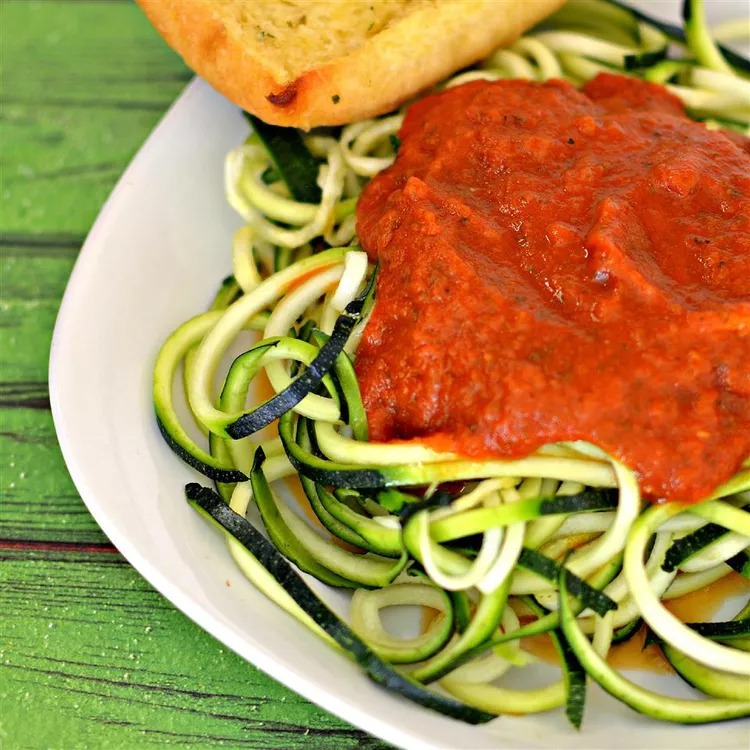

Back to Home Page
Zucchini Spaghetti alla Marinara

Description
It seems like everyone's wild about zucchini "noodles." Here, they get tossed with raw tomato sauce for the ultimate fresh-from-the-garden dinner.
Ingredients
Marinara Sauce:
- 2 ripe tomatoes, chopped
- ½ (8 ounce) can tomato paste
- ½ cup water, or as needed
- 2 tablespoons simple syrup
- 2 tablespoons chopped garlic
- tablespoons balsamic vinegar
- 1 tablespoon olive oil
- 1 teaspoon sea salt
Spaghetti:
- 4 zucchini, peeled and spiralized
Steps
- Blend tomatoes, tomato paste, water, simple syrup, garlic, balsamic vinegar, olive oil, and sea salt together in a high-speed blender until smooth. Add more water if sauce is too thick.
- Place spiralized zucchini in a bowl; add sauce and toss to coat.